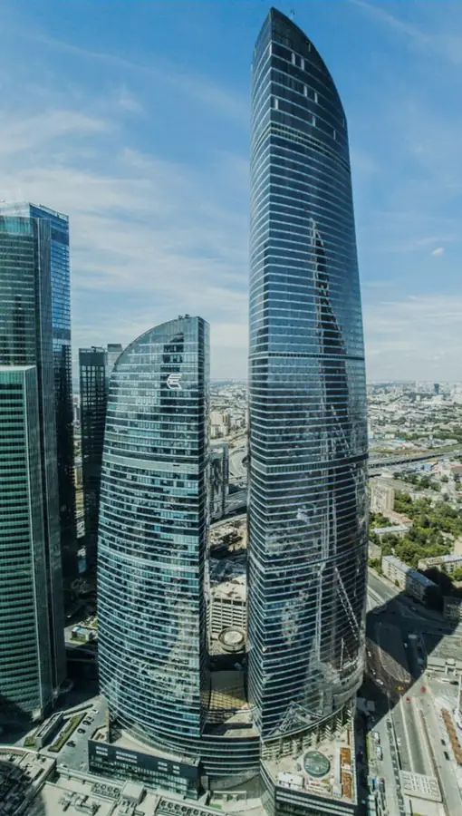

Фото: Igor3188, CC BY-SA 4.0 · Wikimedia Commons
Смотровая площадка · ЦАО
PANORAMA360
Самая высокая смотровая площадка Европы — 327 метров над Москвой.
- ₽₽ · 1 500–3 000 ₽ на человека
- в 2 планах
Позвать сюда: PANORAMA360Открыть в каталоге: PANORAMA360Маршрут до места: PANORAMA360
Адрес и детали
- Адрес
- Пресненская наб., 12 (башня «Федерация», 89 этаж)
Открыть на Яндекс Картах (в новой вкладке) - Метро
- м. Выставочная
- Округ
- Центр (ЦАО)
- Цена
- 1 500–3 000 ₽ на человека
- Часы работы
- пн–чт 11:00–21:00; пт 11:00–22:00; сб 10:00–22:00; вс 10:00–21:00 · проверили в октябре 2026
- Телефон
- +7 (495) 151-94-94
Планы с этим местом 2
- PANORAMA360 · Смотровая площадка · м. Выставочная
- 1 минута пешкомSixty · Панорамный ресторан
Закат с самой высокой смотровой Европы — 327 метров над Москвой, а потом ужин на 62-м этаже той же башни с видом на весь город.
Открыть план: Москва с высотыПозвать сюда: Москва с высоты
Фото: Igor3188, CC BY-SA 4.0 · Wikimedia Commons
- PANORAMA360 · Смотровая площадка · м. Выставочная
- 1 минута пешкомRespace · Спа с видом
Сначала Москва с высоты 327 метров на самой высокой смотровой Европы, а потом спуск на 54-й этаж той же башни: спа-девичник с массажем, хамамом, сауной и апартаментами с панорамой.
Открыть план: Спа над МосквойПозвать сюда: Спа над Москвой
Фото: Igor3188, CC BY-SA 4.0 · Wikimedia Commons

Входит в подборки
Похожие рядом


Что ещё рядом


Как позвать
- Выбери план, место или событие — в карточке адрес, цены и маршрут в Яндекс Картах.
- Нажми «Позвать сюда» — соберётся приглашение-игра для свидания или голосование для компании.
- Отправь ссылку в любой мессенджер: тебе ответят, а компания отметит, куда и когда может. Бесплатно и без регистрации.